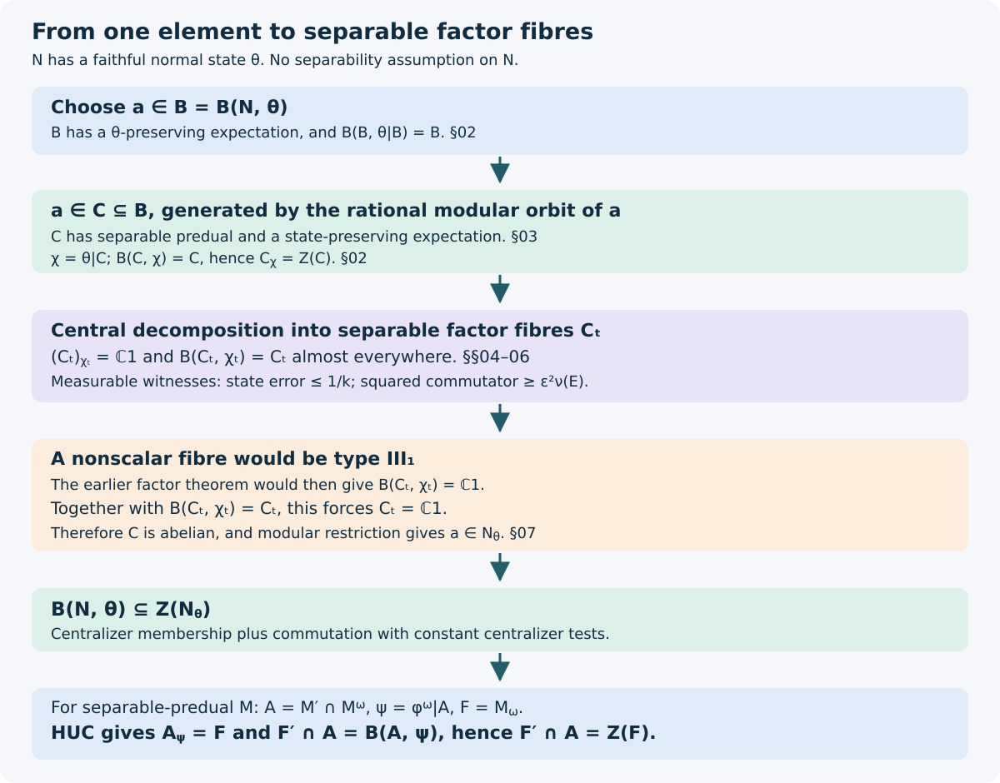

Bicentralizers and the general hypercentral identity
Original exposition by OpenAI Codex, GPT-6 Astra, Ultra. New text and figure: CC0-1.0.
The central-sequence algebra of a separable von Neumann algebra can have nonseparable predual. A theorem stated only for separable factors therefore cannot be applied directly to that algebra. We resolve this difficulty in two stages: take an expected separable subalgebra containing the element being tested, then turn failures in its factor fibres into measurable sequences in the whole algebra.
The substantive factor input is the earlier programme theorem that the bicentralizer of every faithful normal state on a type III₁ factor with separable predual is scalar. The proof below uses that theorem at exactly that scope. It proves that the bicentralizer of any faithful normal state, without a separability assumption on the algebra, lies in the state centralizer. Applied to the identities established in Ultraproduct corners and hypercentral tests, this gives the general hypercentral equality.
Precise inputs and the statement
Let \(N\) be a von Neumann algebra with a faithful normal state \(\theta\). Use
\[ \begin{aligned} (x\theta)(a)&=\theta(ax),\qquad (\theta x)(a)=\theta(xa),\\ \|x\|_\theta^\#&=(\theta(x^*x)+\theta(xx^*))^{1/2}. \end{aligned} \tag{BHG.1} \]The centralizer is \(N_\theta=\{x:x\theta=\theta x\}\). Define
\[ \begin{aligned} \mathrm B(N,\theta)=\{a\in N:\ &\|[a,x_k]\|_\theta^\#\longrightarrow0\\ &\text{for every bounded }(x_k)\text{ with } \|x_k\theta-\theta x_k\|\longrightarrow0\}. \end{aligned} \tag{BHG.2} \]This is the symmetric-seminorm version of the usual bicentralizer. It is equivalent to the one-sided version: the ultrapower relative-commutant description in Proposition 1.3 of the programme lesson The bicentralizer makes the latter a star algebra. Apply its one-sided test to both \(a,x_k\) and \(a^*,x_k^*\) to obtain the two summands in (BHG.1). The converse is immediate.
We use the following exact earlier proofs.
- The bicentralizer, Theorem 2.1 and Proposition 2.2: for an algebra with a faithful normal state, the bicentralizer is modularly invariant and has a state-preserving normal expectation; its restricted-state bicentralizer is itself. No separability is assumed there.
- The bicentralizer of a type III₁ factor is trivial, Theorems 1.1 and 6.1: a nonscalar algebra with separable predual and a faithful normal state with scalar centralizer is a type III₁ factor; and the bicentralizer of every faithful normal state on such a factor is scalar. These are the two factor results used in Section 07.
- The central decomposition and the types of the fibres, Theorems 4.1 and 4.2: central decomposition in a separable representation, measurable factor fields, and passage of cyclic and separating vectors to almost every fibre.
- Central decomposition, The unit operator ball is compact in countable weak coordinates–Countable measurable generators for fibre commutants: compact weak operator balls, countable measurable dense selectors for continuous closed equations, and the measurable commutant fields. Concrete preduals, The concrete predual and its intrinsic norm and the faithful-state GNS construction give the representation and predual facts used below.
- Modular expectations, The criterion and its exact setting–The converse reduces the closed Tomita map: the existence of a state-preserving expectation onto a modularly invariant subalgebra, and restriction of modular time. The canonical state and its centralizer–Hypercentral tests are a bicentralizer identify the canonical-state centralizer and its bicentralizer; The null-sequence test forces the multiplier condition gives the corresponding quotient identities for hypercentral sequences.
Theorem. For every \((N,\theta)\) as above,
\[ \mathrm B(N,\theta)\subseteq Z(N_\theta). \tag{BHG.3} \]In particular the bicentralizer is abelian. There is no assertion here that it always equals \(Z(N_\theta)\). In the particular central-sequence situation of Section 07, the extra reverse inclusion follows from HUC.
Expectations preserve the exact state-commutator norm
Let \(E:N\to P\) be a \(\theta\)-preserving conditional expectation, and put \(\theta_P=\theta|_P\). For \(x\in P\), bimodularity gives
\[ x\theta-\theta x=(x\theta_P-\theta_Px)\circ E. \tag{BHG.4} \]Indeed, both sides evaluated at \(a\in N\) are \(\theta_P(E(a)x-xE(a))\). A positive unital conditional expectation is contractive, so (BHG.4) gives one norm inequality. Restricting to \(P\) gives the other. Hence
\[ \|x\theta-\theta x\|= \|x\theta_P-\theta_Px\|. \tag{BHG.5} \]The symmetric seminorms also agree on \(P\).
Put \(B=\mathrm B(N,\theta)\) and \(\rho=\theta|_B\). The structure theorem quoted in Section 01 supplies a \(\theta\)-preserving expectation onto \(B\). Formula (BHG.5) gives a short proof of its idempotence assertion. If a bounded sequence \(x_k\in B\) centralizes \(\rho\) asymptotically, it centralizes \(\theta\) asymptotically in \(N\). Every \(a\in B\) therefore satisfies \(\|[a,x_k]\|_\rho^\#\to0\). Thus
\[ \mathrm B(B,\rho)=B. \tag{BHG.6} \]More generally, if \(C\subseteq B\) admits a \(\rho\)-preserving expectation, the same argument, first lifting its test sequences to \(B\), proves
\[ \mathrm B(C,\rho|_C)=C. \tag{BHG.7} \]This implication needs the expectation. Merely being a subalgebra does not give the functional-norm equality (BHG.5).
Constant sequences in the centralizer are permissible tests. Therefore any algebra \((C,\chi)\) satisfying \(\mathrm B(C,\chi)=C\) satisfies
\[ C_\chi=Z(C). \tag{BHG.8} \]The inclusion from left to right follows by testing each \(a\in C\) against a constant element of \(C_\chi\). The reverse inclusion follows directly from the centralizer definition.
A separable expected algebra containing a specified element
Lemma. For every \(a\in B\), there is a unital subalgebra \(C\subseteq B\), containing \(a\), with separable predual and a \(\rho\)-preserving faithful normal expectation from \(B\) onto \(C\). It satisfies (BHG.7).
Proof. Set
\[ C=\{\sigma_q^\rho(a):q\in\mathbb Q\}'' \quad\text{inside }B, \tag{BHG.9} \]with the unit and adjoints included when taking the generated algebra. Every real modular translate of a generator is a strong* limit of rational translates, since modular time is strongly* continuous on bounded orbits. Thus it belongs to \(C\). Normality of each automorphism extends this to the algebra generated by those elements, and applying negative time proves \(\sigma_t^\rho(C)=C\). The modular expectation theorem supplies the stated expectation.
Here is the separability argument, rather than an assumption about \(B_*\). In the faithful GNS representation for \(\rho\), let \(H_C=\overline{C\xi_\rho}\). The norm-closed unital C* algebra generated by the countable set in (BHG.9) is norm separable: rational complex star polynomials form a countable norm-dense set. Kaplansky density shows that its vectors applied to \(\xi_\rho\) are dense in \(H_C\). Hence \(H_C\) is separable. The representation of \(C\) on \(H_C\) is faithful, because \(c\xi_\rho=0\) implies \(\rho(c^*c)=0\), and normal by the faithful-state GNS construction. Its concrete predual is a quotient of the trace class on \(H_C\). The trace class is separable: finite matrices with rational complex entries in a fixed countable orthonormal basis are dense, first by finite-rank approximation and then by finite-dimensional approximation. Thus \(C_*\) is separable. Finally (BHG.7) follows from Section 02. \(\square\)
It remains to prove that an algebra with separable predual satisfying (BHG.7) is abelian. This is a statement about its factor fibres, but it requires more than applying a factor theorem by name.
Normalized fibre states and countable contraction tests
Let \(C\) have separable predual, let \(\chi\) be a faithful normal state, and suppose \(\mathrm B(C,\chi)=C\). Its faithful GNS representation is separable. Here is the predual argument if this has not already been supplied by Section 03. Evaluations on a norm-dense countable family in \(C_*\) metrize the weak* topology of the operator unit ball. Diagonal subsequences of these bounded scalar evaluations have limits defining bounded linear functionals on \(C_*\); predual duality represents each such limit by a contraction of \(C\). Thus this metric ball is compact and has a countable weak*-dense set. Rational convex combinations give strong* density in the GNS representation by the real Hilbert-space separation argument below, since its vector coefficients are normal. Applying these contractions to the cyclic vector proves separability of the GNS Hilbert space.
Apply the central decomposition theorem from Section 01 in this representation. After discarding a null set, write
\[ C=\int_X^\oplus C_t\,d\nu(t),\qquad Z(C)=L^\infty(X,\nu),\qquad \chi(c)=\int_X\chi_t(c_t)\,d\nu(t), \tag{BHG.10} \]where \(\nu\) is a probability measure on a standard base, every \(C_t\) acts on a separable Hilbert space and is a nonzero factor, and every \(\chi_t\) is a faithful normal state.
For clarity, the state normalization follows from the vector statement of that theorem. Decompose the cyclic separating GNS vector as \(\xi_t\). It remains cyclic and separating almost everywhere. Its squared norm \(w(t)=\|\xi_t\|^2\) is positive almost everywhere. Replace the original base measure \(\mu\) by \(d\nu=w\,d\mu\), and use the unit vectors \(\eta_t=w(t)^{-1/2}\xi_t\). Their vector states are \(\chi_t\), and integration gives (BHG.10). The equivalent measures have the same null sets and the same essentially bounded operator fields. This change can be implemented on the Hilbert integral by multiplication by \(w^{-1/2}\).
We require a countable family of measurable contractions \(d_j(t)\) which is strong* dense in the unit ball of every \(C_t\) on one conull set. DC-03 supplies countably many measurable contractions weak-operator dense in those balls. Close this family under finite rational convex combinations. It stays countable, measurable and contractive. Its values are strong* dense, as follows.
Fix a fibre, a contraction \(x\), finitely many vectors \(v_1,\ldots,v_m\), and map a contraction \(y\) to
\[ \bigl(yv_1,\ldots,yv_m,y^*v_1,\ldots,y^*v_m\bigr) \tag{BHG.11} \]in a real Hilbert space. Weak operator approximation gives weak approximation of this tuple. The weak closure and norm closure of a convex set in a Hilbert space coincide: if a point lies outside the norm closure, the nearest-point separation argument, or Hahn–Banach, separates it by a continuous real linear functional, which is weakly continuous. Consequently finite convex combinations approximate (BHG.11) in norm. Rational approximations of their coefficients retain this approximation and the convex-combination bound. This proves strong* density. We include zero in the family.
Every \(d_j=\int d_j(t)\) belongs to \(C\). For a measurable contraction field \(y_t\), put
\[ f_y(t)=\|y_t\chi_t-\chi_t y_t\|. \]This function is measurable because
\[ f_y(t)=\sup_j \bigl|\chi_t(d_j(t)y_t-y_t d_j(t))\bigr|. \tag{BHG.12} \]The supremum is correct by strong* density and continuity of a normal functional on bounded strong* convergent sequences. Each scalar term is a measurable vector coefficient.
The following continuity is also needed when selecting witnesses. In one fibre, with unit vector \(\eta\) for \(\chi_t\),
\[ \|u\chi_t\|\leq\|u\eta\|,\qquad \|\chi_tu\|\leq\|u^*\eta\|. \tag{BHG.13} \]These inequalities follow by evaluating on an arbitrary contraction and using Cauchy–Schwarz. Thus \(y\mapsto\|y\chi_t-\chi_ty\|\) is continuous on the operator unit ball in the strong* topology. For fixed \(a\), the function \(y\mapsto\|[a,y]\|_{\chi_t}^\#\) is continuous there too: both the product and its adjoint act continuously on each fixed vector when the operators are uniformly bounded.
The fibre centralizers are scalar
Lemma. In (BHG.10), \((C_t)_{\chi_t}=\mathbb C1\) for almost every \(t\).
Proof. Equation (BHG.8) gives \(C_\chi=Z(C)\). We pass this equality to the fibres by measurable closed equations.
For each \(t\), the operator unit ball of \((C_t)_{\chi_t}\) is described by the equations defining membership of the unit ball of \(C_t\), together with
\[ \chi_t(y d_j(t)-d_j(t)y)=0\qquad(j\geq1). \tag{BHG.14} \]The membership equations are the countably many commutation equations with the measurable commutant generators supplied by DC-03. Use the ambient compact weak operator ball of \(B(\ell^2)\), and impose the measurable fibre-support projection as in that proof if dimensions vary. For fixed \(t\), every equation is weak-operator continuous in \(y\): the terms in (BHG.14) are finite vector coefficients of \(y\). For fixed \(y\), they are measurable in \(t\). They determine the centralizer because the \(d_j(t)\) are strong* dense and the functional in their place is normal. The zero operator supplies a point in every solution set.
DC-02 therefore gives measurable contractions \(s_l(t)\) weak-operator dense in the unit ball of \((C_t)_{\chi_t}\). Their integrals \(s_l\) belong to \(C_\chi\): for every \(b\in C\), integrate the fibre identities \(\chi_t(s_l(t)b_t)=\chi_t(b_t s_l(t))\). Thus \(s_l\in Z(C)\). Under the central decomposition, this means that \(s_l(t)\) is scalar almost everywhere. There are only countably many \(l\), so all these statements hold on one conull set. The scalar unit ball is weak-operator closed. Density of the selectors now implies that the entire unit ball of \((C_t)_{\chi_t}\) is scalar on that set. The unit belongs to the centralizer, proving equality. \(\square\)
Fibre failures give one measurable sequence
Lemma. In (BHG.10), \(\mathrm B(C_t,\chi_t)=C_t\) for almost every \(t\).
Proof. Let \(d_j\) be the family from Section 04. For positive integers \(j,r\), define the measurable functions
\[ f_r(t)=\|d_r(t)\chi_t-\chi_t d_r(t)\|, \qquad g_{jr}(t)=\|[d_j(t),d_r(t)]\|_{\chi_t}^\#. \tag{BHG.15} \]Measurability of the first is (BHG.12), and that of the second follows from the vector-state formula. For positive rational \(\varepsilon\), define
\[ E_{j,\varepsilon} =\bigcap_{k\geq1}\ \bigcup_{r\geq1} \{t:f_r(t)<1/k,\ g_{jr}(t)>\varepsilon\}. \tag{BHG.16} \]These sets are measurable. If \(d_j(t)\) fails to belong to \(\mathrm B(C_t,\chi_t)\), a subsequence of bounded witnesses, scaled to contractions, has commutator seminorm bounded below by a positive number while its state-commutator norms tend to zero. For each \(k\), choose one witness with state error strictly below \(1/(2k)\), and approximate it strongly* by a member of the family \(d_r(t)\). By the continuity in (BHG.13), this gives both strict inequalities in (BHG.16), for one fixed positive rational \(\varepsilon\) smaller than the commutator lower bound. Hence that fibre lies in some \(E_{j,\varepsilon}\).
Suppose \(E=E_{j,\varepsilon}\) has positive measure. For each \(k\) and \(t\in E\), choose the least integer \(r=r_k(t)\) satisfying the two inequalities in (BHG.16). Least-index choice from countably many measurable tests is measurable. Put
\[ y_k(t)= \begin{cases} d_{r_k(t)}(t),&t\in E,\\ 0,&t\notin E. \end{cases} \tag{BHG.17} \]Each field is measurable and contractive, so it defines \(y_k\in C\). For every contraction \(b\in C\), disintegration gives
\[ \begin{aligned} |(y_k\chi-\chi y_k)(b)| &\leq\int_E f_{r_k(t)}(t)\,d\nu(t)\\ &\leq 1/k. \end{aligned} \tag{BHG.18} \]Thus \(\|y_k\chi-\chi y_k\|\to0\). On the other hand,
\[ \|[d_j,y_k]\|_\chi^{\#\,2} =\int_E g_{j,r_k(t)}(t)^2\,d\nu(t) \geq\varepsilon^2\nu(E)>0. \tag{BHG.19} \]This contradicts \(d_j\in C=\mathrm B(C,\chi)\). Therefore every \(E_{j,\varepsilon}\) has measure zero.
The index set of pairs \((j,\varepsilon)\) is countable. Outside their union, every \(d_j(t)\) belongs to \(\mathrm B(C_t,\chi_t)\). The latter is a von Neumann algebra by the bicentralizer structure theorem, and the \(d_j(t)\) are strong* dense in the full unit ball of \(C_t\). Hence it equals \(C_t\). This proves the lemma. \(\square\)
The selection in (BHG.17) is allowed to vary with \(t\). There is no unproved interchange of a fibrewise existential quantifier with an integral, and no requirement that one fixed witness work in every fibre.
From the factor theorem to hypercentral equality
Proof of (BHG.3). First suppose \(C_*\) is separable and \(\mathrm B(C,\chi)=C\). By Sections 05–06, almost every factor fibre has scalar state centralizer and is its own bicentralizer. Each fibre has separable predual because it acts on a separable Hilbert space. If such a fibre is not scalar, Theorem 1.1 of the earlier bicentralizer theorem lesson makes it a type III₁ factor. Theorem 6.1 of that lesson then says
\[ \mathrm B(C_t,\chi_t)=\mathbb C1, \]contradicting \(\mathrm B(C_t,\chi_t)=C_t\ne\mathbb C1\). Thus almost every fibre is scalar, and (BHG.10) shows that \(C\) is abelian.
Now take arbitrary \((N,\theta)\) and \(a\in B=\mathrm B(N,\theta)\). Section 03 supplies an expected separable \(C\subseteq B\) containing \(a\), with \(\mathrm B(C,\rho|_C)=C\). The preceding paragraph makes \(C\) abelian. The modular group of a faithful normal state on an abelian algebra is trivial: in its GNS representation, \(\|c\xi\|=\|c^*\xi\|\), so the closed Tomita map is an antiunitary involution and its modular operator is the identity. Modular restriction for the state-preserving expectation therefore gives \(\sigma_t^\rho(a)=a\). Applying the same restriction to the expectation \(N\to B\) gives \(\sigma_t^\theta(a)=a\). Hence \(a\in N_\theta\).
Constant centralizer tests also give \(B\subseteq(N_\theta)'\cap N\). Combining the two inclusions proves (BHG.3). \(\square\)

Figure. For each specified element of the bicentralizer, Section 03 supplies an expected separable algebra. Sections 05–06 transfer both the scalar-centralizer property and the bicentralizer equality to its factor fibres. The two factor theorems exclude every nonscalar fibre. The final line combines (BHG.3) with HUC-06–HUC-07; it does not impose separability on the central-sequence algebra.
Hypercentral corollary. Let \(M\) have separable predual and a faithful normal state \(\varphi\), and fix a free ultrafilter \(\omega\) on \(\mathbb N\). In the notation of HUC, put
\[ Q=M^\omega,\qquad A=M'\cap Q,\qquad \psi=\varphi^\omega|_A,\qquad F=M_\omega. \]Then
\[ F'\cap A=Z(F). \tag{BHG.20} \]Proof. HUC-06 and HUC-07 give \(A_\psi=F\) and \(F'\cap A=\mathrm B(A,\psi)\). The state \(\psi\) is faithful and normal; its algebra need not be separable. Apply (BHG.3) to get
\[ F'\cap A=\mathrm B(A,\psi)\subseteq Z(A_\psi)=Z(F). \]The reverse inclusion holds because \(F\subseteq A\). This proves (BHG.20). The quotient identities of NHC-02 now give the equality of its weaker-input and predual-centralizing hypercentral sequence spaces. In particular a bounded fixed-operator-central sequence which asymptotically commutes with every predual-centralizing sequence is itself predual centralizing. \(\square\)
The separability of \(M_*\) is used in HUC's coordinate diagonal. Separability of \(A_*\) is neither asserted nor required. The type III₁ theorem is applied only after passing to separable factor fibres.
Worked examples and checks on the hypotheses
1. An abelian algebra need not be separable. Let \(N\) be any abelian von Neumann algebra with a faithful normal state. Determine its bicentralizer and verify (BHG.3).
Solution. Every commutator of algebra elements is zero. Every element therefore passes every test in (BHG.2), so \(\mathrm B(N,\theta)=N\). Commutativity also gives \(N_\theta=N\) and \(Z(N_\theta)=N\). The algebra need not have separable predual. For a specified element, Section 03 uses only its countably generated subalgebra, which in this case is simply the abelian algebra generated by that element and its adjoint.
2. A nonscalar bicentralizer in a matrix factor. Let \(N=M_2(\mathbb C)\) and \(\theta(x)=\operatorname{Tr}(\operatorname{diag}(s,t)x)\), with \(s,t>0\), \(s+t=1\), and \(s\ne t\). Compute \(\mathrm B(N,\theta)\).
Solution. Its centralizer is the diagonal algebra \(D\). Constant tests from \(D\) force \(\mathrm B(N,\theta)\subseteq D'\cap M_2=D\). Conversely, if a bounded sequence centralizes \(\theta\) asymptotically, its off-diagonal entries tend to zero. Indeed its commutator with the density matrix has trace norm tending to zero, and each off-diagonal entry is multiplied by the nonzero scalar \(s-t\) or its negative. Thus its commutator with any fixed diagonal matrix tends to zero in operator norm. Every diagonal matrix belongs to the bicentralizer, giving \(\mathrm B(N,\theta)=D=Z(N_\theta)\). The bicentralizer is abelian but is not the center \(\mathbb C1\) of the ambient factor.
3. Why the expectation cannot be dropped. Which exact part of the separable reduction would fail for an arbitrary subalgebra \(C\subseteq B\)?
Solution. Norm-small commutators with the restricted state test only contractions in \(C\); their norms in \(B_*\) test all contractions of \(B\). Without a state-preserving expectation, the restricted norm need not control the larger norm. Formula (BHG.4) supplies precisely that control and equality. Generating \(C\) by a rational modular orbit guarantees the invariance needed for that expectation.
4. Why positive-measure failures must be selected. Suppose each fibre supplies witnesses, but no single prechosen field has a commutator bounded away from zero on a positive-measure set. Explain why Section 06 still works.
Solution. For fixed \(j\) and \(\varepsilon\), the bad set is the countable intersection of countable unions in (BHG.16). At each accuracy \(1/k\), the least permissible index \(r_k(t)\) is chosen separately in each fibre. The pieces where \(r_k(t)=r\) are measurable and form a countable partition. Gluing the corresponding fields produces one contraction in the integral algebra. Equations (BHG.18)–(BHG.19) then give a uniformly vanishing state error and a fixed positive global commutator lower bound. Countability makes both the selection and the final common conull set valid.
For freely accessible background on the bicentralizer structure and idempotence, see C. Houdayer and Y. Isono, Unique prime factorization and bicentralizer problem for a class of type III factors. The type III₁ theorem used here is proved in the earlier programme lesson identified in Section 01; the separate freely accessible paper by C. Houdayer and A. Marrakchi, The classification of flows on II₁ factors and Connes' bicentralizer problem, states its unrestricted-factor version as Theorem C. The present proof needs only the separable-factor version and supplies the expected-subalgebra and measurable-fibre reductions explicitly.